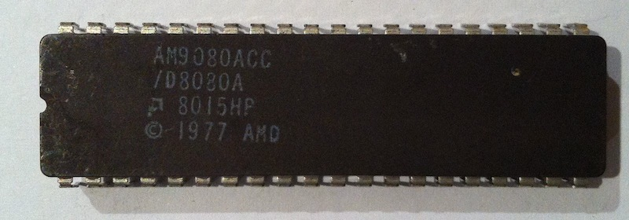
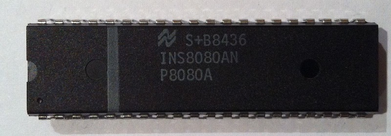
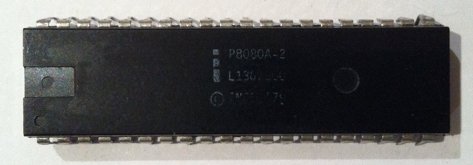
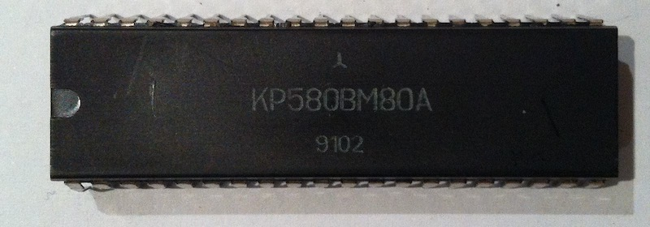
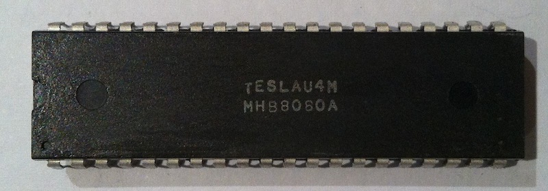
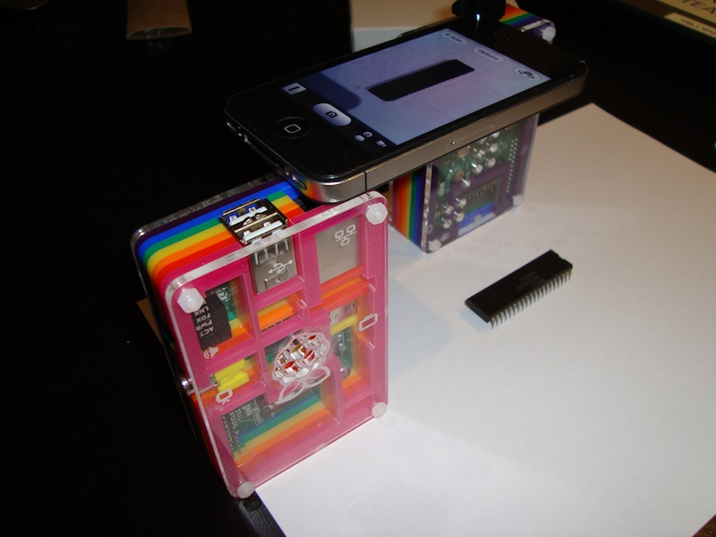

My collection of Intel 8080 microprocessors
I started programming twenty year ago coding in machine codes for Intel 8080. This microprocessor was my lucky pass to the fascinating world of bits and bytes. Years later developing various emulators of i8080 and tackling with undocumented and partially documented features of this processor I decided to collect real chips from different manufacturers and examine them using the 8080 CPU Exerciser.
At the moment I have 20 processors (from Intel, AMD, National Semiconductor, NEC, Samsung, Texas Instruments, and also manufactured in the Soviet Union and Czechoslovakia). Amongst chips having a year on the label the earliest is dated back to 1974 and the latest is 1980. All CPUs except one are fully functional. I tested them on my Радио-86РК.
Testing revealed that all processors are identical according to the CPU Exerciser except clones from AMD. The AMD processors, AM8080 and AM9080A, behave differently performing bitwise AND operation (ANA and ANI instruction). Original Intel CPUs and non-AMD clones set the AC (half-carry) flag to the value of the 3rd bit (A3) from the bitwise OR between the accumulator and the argument of ANA or ANI. The AMD clones always zero the AC flag in the ANA and ANI instructions. I don’t know why the original Intel CPU calculates the AC flag in such a weird way.
My i8080 chips
The double click on the pictures flips the top and the bottom views.
AMD
Interestingly, AMD i8080-compatible chips were reverse-engineered from schematics literally stolen from Intel. So, the Intel vs AMD war began from 8080.
8080A, 1977

AM9080, 1977



National Semiconductor
INS8080AN

This chip is faulty.
INS8080AN


Intel
1974

1977

1979

1980

Russia
KR580IK80A (КР580ИК80A)

KR580VM80A (КР580ВМ80A)
There is the original mini-datasheet in Russian: page 1 and page 2.
{kind=link}
{kind=link}



NEC


Samsung

Telsa (Czechoslovakia)

Texas Instruments

This is how I took pictures of all these chips in a quite technological way using one iPhone and two Raspberry Pi:

P.S.
I hope the collection will grow. I still have only one chip in white ceramic packaging (KR580VM80). If you know i8080 clones from other manufacturers, which a not listed here, I’d appreciate if you let me know.
If you would like to donate any i8080 chip I’ll be happy putting a reference to you next to the image of the chip.
Disclaimer